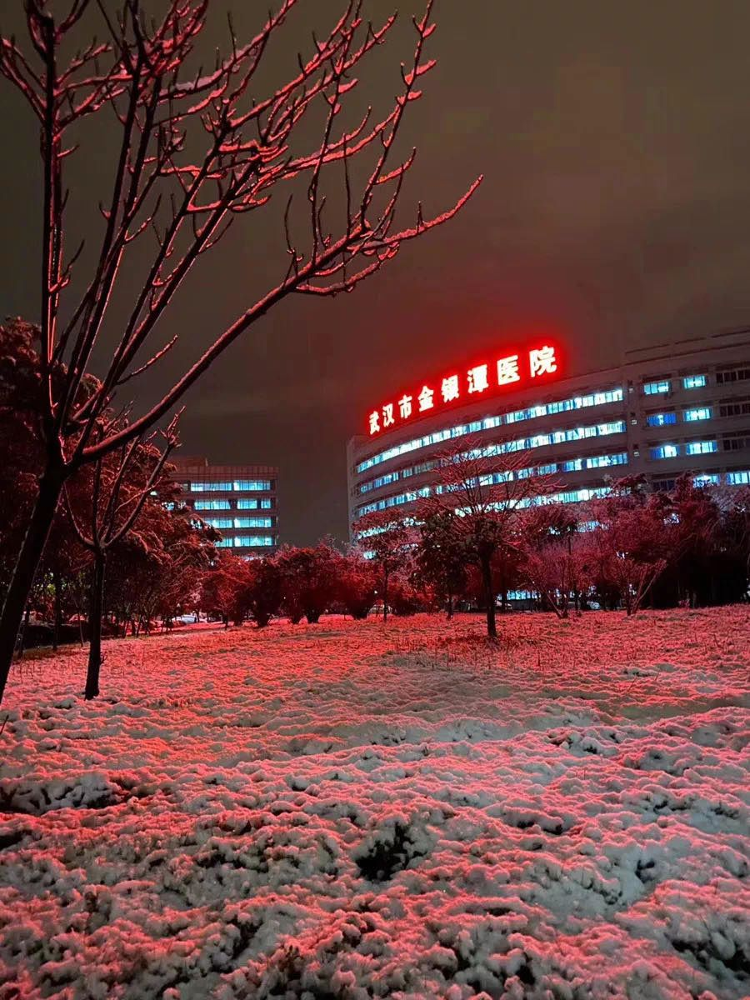
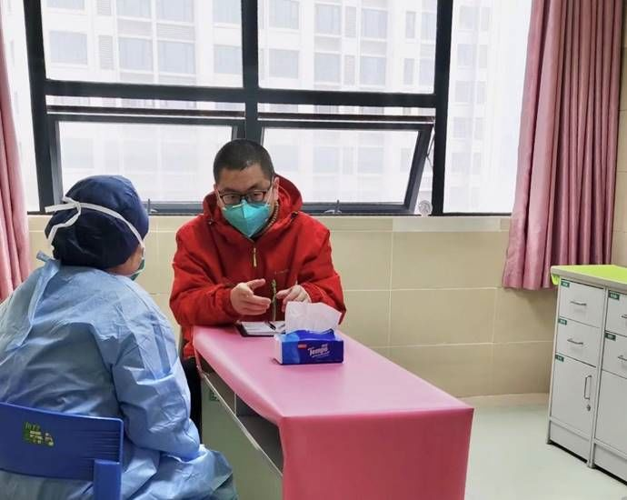
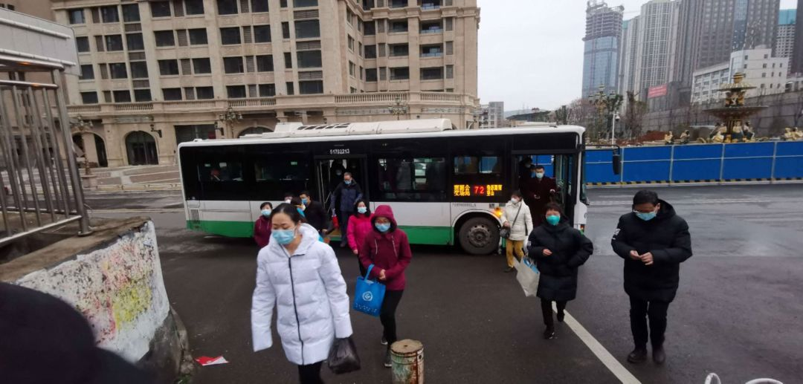

现场｜武汉，重症患者如何救治？
原文链接 备份链接 新增和现有病例基数连续回落几天后，武汉各大医院终于度过最艰难的时刻。眼下，如何降低重症患者死亡率成为各大重症定点收治医院的首要任务。药物、血浆、ECMO等治疗手段已经纷纷进入临床应用，但面对捉摸不定的新冠病毒，医生们 …

新冠肺炎重症患者死亡率，比SARS低比普通流感高。
记者 | 黄 祺
3月6日下午，武汉市第三医院光谷院区19楼8病区迎来“关门大吉”。
随着上海市第一康复医院高天霖医生一声“关灯！”，11位医护人员身后一片漆黑，高医生转身关上了病区大门。
武汉第三医院病区关闭
上海交通大学医学院附属瑞金医院副院长、上海第三批援助湖北医疗队队长陈尔真通过微信朋友圈分享这则好消息。随着病人数量逐渐减少，武汉三院光谷院区上海医疗队接管的两个重症病房将合并成一个病房，继续保留重症监护室和一个重症病房。
上海第三批医疗队在武汉市第三医院累计救治了300余名病人，其中半数已经出院。近日，院区平均每天接收其他医院转来的危重症病例大约有5人。为了集中医疗力量救治这些人，医院决定关闭一个病区，医疗队管理的床位数从141张减少到85张，其中重症病房50张床位，重症监护室35张床位。
病区“关门大吉”，是这支医疗队日夜坚守的成果，也表明武汉抗“疫”取得阶段性胜利。

2月15日武汉大雪
从最冷的寒冬到武汉早樱初绽，上海第三批援助湖北医疗队，已经在武汉新冠肺炎救治第一线连续奋战长达40天。医疗队148名医护人员到达武汉初期，武汉新冠肺炎重症病患激增，医疗设备短缺、病房匆匆改建、防护物资紧张，重症患者的救治正处于最艰苦、最艰难的时候。
参与和见证了武汉新冠肺炎救治几乎全过程的陈尔真副院长，在关闭病区当天晚上接受了《新民周刊》专访，介绍了医疗队到达武汉早期的情况，以及新冠肺炎疫情中值得总结的经验教训。
新冠肺炎重症患者死亡率
比SARS低比普通流感高
《新民周刊》：病区“关门大吉”时您当时在做什么？是怎样的心情？
陈尔真：楼上关灯的时候，我在楼下指挥，安排后续的事情。
我们上海第三批医疗队接管的三个病区最初是130张病床，最高峰的时候加床加到145张，现在病人陆续出院，我们还剩下85张床位。
我觉得通过这么多天的努力，我们取得了一些成果，病人治好出院了，这是值得高兴的。关掉这个病区，尽管有阶段性胜利，但是我们士气不能减，还是要提高警惕，尤其是安全医疗质量方面，要更加关注，真正实现做细、做精。

陈尔真副院长帮医护人员整理防护服
《新民周刊》：您这批医疗队是年初四到武汉的，什么时候可以回家？
陈尔真：时间还不知道，至少还要两个星期吧。就像今天我们关闭一个病区，后面患者少了，我们就可以逐步关闭更多的病区，等只有少量病人才可以转到火神山、雷神山、金银潭医院。
我们这里病区如果关闭，消毒后就可以恢复正常的医疗服务。现在武汉也要开始做好复工准备，医疗系统是首先被破坏的系统，医疗系统也需要逐步恢复起来。
《新民周刊》：医疗队收治的全部是重症患者吗？
陈尔真：全部300多名病人，都是重症患者，其中危重症患者有60位，占1/5。现在剩下80多位病人中，还有30名是危重症患者。

2月9日直升机从上海运送物资到上海医疗队
《新民周刊》：疫情早期武汉重症患者病死率比较高，其中最重要的原因是什么？
陈尔真：重症患者早期的死亡率确实比较高，主要是当时武汉的医疗救治力量不足，医护人员不够，医疗设施也不够，当时一床难求，很多患者得不到及时救治，加重了病情。
最早患者病死率曾高达10%，现在已经降到了3%多一点。
救治成功率提高，一个原因是全国各地医疗队来支援，设备、物资逐渐够用了。还有一个非常关键的原因是，经过一段时间救治，我们对新冠肺炎病理生理机制有了深入了解和认识，找到了一些疾病加重的因素，采取了一些比较针对性的治疗。所以目前，在医疗资源比较充足的情况下，治愈率在不断提高。

陈尔真在病房中
《新民周刊》：解决了人员和资源不足的问题后，重症新冠肺炎的病死率到底算不算高？
陈尔真：我们有一些数据。总体而言，新冠肺炎的病死率比SARS要低一些，比季节性流感要高一点，但高得不算很多。
通过前面一段时间总结73000例病例的资料，我们知道所有新冠肺炎患者中，普通轻症患者占81%，重症患者占14%，危重症患者占5%。普通轻症患者中几乎是没有死亡的，重症患者的死亡率大概在将近40%，而危重症患者的死亡率高达50%以上。
也就是说，新冠肺炎病情越重，它的死亡率越高。从普通轻症肺炎发展到危重，是一个逐步进展的过程，我们要做的就是找到加重病情的因素，用有效的措施阻断进展。
现在我们对病情进展中的一些关键因素已经有了比较好的方法，比如炎症风暴，我们有血液净化的方法，不久前还开展了用风湿性疾病的药物“托珠单抗”对抗炎症风暴的治疗。当然，最主要的治疗方式还是有效的抗病毒和免疫功能的支持治疗等等，它是一个综合的治疗。
在医疗资源丰富的前提下，新冠肺炎总体病死率不能说特别高，但武汉早期的情况是病毒传播速度太快，传播太广，所以新冠肺炎传染性很强，危害程度很大。
重症患者未来是否留后遗症
有待观察
《新民周刊》：最近您提到要重视重症新冠肺炎患者的康复治疗，为什么提出这个建议？
陈尔真：我做了30年重症医学工作，早些年我们对重症病人康复不是很重视，当时我们发现重症病人出院后还是会有很多问题。
比如说重症患者长期卧床，过去我们甚至不让病人活动，给他一些约束。病人长期不动，肌肉分解，等原发疾病治好，病人变得比较虚弱，活动能力下降，严重的还有认知功能下降。
最近5年来，重症医学开始重视康复的介入，病人就是戴着呼吸机，也尽可能要做一些康复训练。康复训练的及时介入，能够缩短病人依靠呼吸机的时间，也能缩短ICU治疗时间，缩短他的住院时间，提高救治成功率。
新冠肺炎病人的特点是有传染性，其他的和普通重症患者基本是一样的，所以在做好防护的情况下，我们对病房里的重症患者也进行了一些康复训练。
我们首先对肺部功能做一些训练，新冠肺炎病毒首先攻击的还是肺部，促进肺功能的恢复显得尤为重要。第二个，我们帮助患者恢复四肢活动的能力，这样等他疾病治疗好以后，还能改善他的生活质量，帮助他将来真正回归社会。

上海市长宁区精神卫生中心主治医生季海峰为医护人员做咨询
《新民周刊》：您很早就提出心理干预的重要性。
陈尔真：对，康复的概念还包括心理康复。新冠肺炎疫情这样大灾大难，不管你是病人，或者是家属，或者是没有生病的人，都有恐惧感。这次疫情中还有一个特殊现象，许多家庭成员互相传染，出现家庭聚集性地发病，这个对人的打击是比较厉害的。
2008年我去支援汶川地震救援时，这方面有一些经验，所以我觉得心理干预要重视起来。我们上海第三批医疗队里就有两位长宁区精神卫生中心的医生，到了武汉我请他们立即建立一个心理危机干预小组，建立一个心理咨询室。
不仅是病人，医务人员在疫情中也是受到打击的，早期那么高强度的工作，医生护士也受不了。当医护人员看到救治的病人死亡，他们也会有挫败感，会很伤心。早期防护物资不到位的情况下，医护人员还要担心自己被感染。
我们建立了心理干预小组后发现，面对面的交流比较困难，后来就开了一个公众微信号，搭建一个心理咨询平台。通过微信，心理医生跟病人交流，还发一些心理健康科普内容。我们逐渐形成了“沪鄂情、心连心”这样一个心理咨询的品牌，开展了大量工作。

《新民周刊》：17年前SARS病人中有一些重症患者留下了后遗症，目前看新冠肺炎重症患者康复情况如何？
陈尔真：最早出院的重症患者时间可能也就一个多月，所以目前还看不到病毒对患者带来的远期影响，必须要跟踪随访比较长的时间才能说。
轻症的患者，我认为不大会有严重的后遗症，主要的问题可能是心灵上的创伤。
但是对重症患者，危重症患者，尤其是用了呼吸机的病人，未来是不是有肺部纤维化的可能性，这个需要关注。从之前的病理解剖结果来看，患者肺部结构是被破坏的。
还有一个需要注意的是神经功能的紊乱。为什么呢？因为这些病人在治疗的过程当中，或多或少有一段时间处于缺氧状态，这对神经细胞的损害肯定是比较严重的。患者远期的影响究竟如何，需要长期的观察。
传染病预警系统
不能流于形式
《新民周刊》：这一个多月来，什么时刻是让您觉得最艰难、心情最沉重的时刻？
陈尔真：刚来武汉的那几天，感触比较深。
我们来的时候医院刚刚临时改建为新冠肺炎定点医院，硬件上根本就达不到救治重症患者的条件。譬如说当时的氧气供应成了很大问题，因为重症患者每个病人都要输氧，但氧气压力不够，呼吸机打不起来。那几天，每天四五位病人死亡，殡仪馆的车一起拉走，这个时候我真的是很无助，真的很伤感。
我找人也找不到，后来正好有一个新华社的记者联系我。我想了个办法，请这位记者写内参，他当天晚上就把一份内参送到中央指导组。第二天，解决氧气供给不足的人来了，终于把这个问题解决了。这些基本的救治设备和条件有了，才没有之前那么多病人死亡的情况。
这之后，我们保持了十五天零死亡，再也没有出现死亡高峰。后来新闻发布会上有关负责人也谈到了这个情况，早期供氧不足的问题，后来得到了解决。

元宵节早上，上海医疗队医护人员到武汉第三医院上班
《新民周刊》：在武汉40天，您几乎参与了新冠肺炎救治最关键的时期，也目睹了传染病带来的巨大冲击。您认为这次疫情中有哪些经验教训是值得总结的？
陈尔真：这个过程当中最大的感想，首先是要有一个严密的传染病监测体系和预警体系，这个体系一定要进一步完善，功能需要强化。比如说发热门诊，是非典留下的一个经验，但很多地方发热门诊流于形式，没有起到预警的作用，这是沉重的教训，是很可悲的一件事情。
《新民周刊》：武汉有很多大医院，但还是难以应对发展如此快的传染病疫情，以后我们要怎么做才能“有备无患”？
陈尔真：其实武汉的医疗资源已经很丰富了，武汉三甲医院有44家，上海只有38家；武汉1100万人口，上海2400万人。比较下来武汉的医疗资源比上海还丰富，还要多。但是新冠肺炎疫情这样的一个沉重打击到来，还是难以应对。
我们要做到有备无患，平时要有备战计划。我们这样一个有14亿人口的大国，大部分人都生活在大中小城市里，流动性又很大。我们要随时做好应对新发传染病的准备。
我觉得医院要做到平战结合。什么叫平战结合？比如一家医院平时按照正常的医疗秩序运转，一旦有紧急情况预警，马上就可以转变成一个符合疫情防控要求的医院。到现在为止，国内的医院还做不到。
首先医院要留出一个空间，一旦出现紧急情况马上就能用起来，这种空间平常是要投入的。从预防的角度投入了这些钱，看起来好像一点用都没有，当紧急情况发生的时候它是无比强大的，可以节省很多很多的成本。
还有就是物资的储备机制。比如说防护服，平常一点用都没有对不对？而且防护服有有效期的，但是一般有效期很长，5年、10年。我认为医院就是应该储备这些物资，比如医院里准备个500套防护服，每年损耗10%用来训练，或者遇到传染性疾病偶尔用一下，5年为一个周期更换，这个是可以做到的。

陈尔真在武汉与队员们一起开会安排工作
《新民周刊》：疫情中是不是还体现出人才储备上的短板？
陈尔真：专业的事情还是要专业人来做的。这次全国各地派出4万多名医护人员支援湖北，我们重症医学相关的人才占了10%。重症医学在重症患者救治中有独特的优势，但同时，我们这些医生对于传染病防控的能力，比较薄弱。医生数量不代表质量，我们还需要平时加强训练，及时掌握传染病防控的基本知识、基本技能。


征集令
阳春三月，万物复苏。在抗击疫情的战斗中，我们迎来了春天，《新民周刊》也迎来了新闻线索和故事征集的第二弹。
如今，经历了一个多月休眠的城市正在逐渐苏醒，各行各业都开始有序复工复产。
不论您是企业老板、管理者，还是普通员工；又或者，您是老师、家长，还是学生本人……我们希望了解复工复产复学过程中的困难，或暖心故事。
如果你是抗疫一线的医生护士，疫情期间拍下了珍贵的摄影作品，也欢迎联系我们投稿。
当然，抗击新冠肺炎疫情的相关故事，我们仍然欢迎。
希望广大读者朋友，提供相关线索，说出你的故事，让我们用新闻留存这一切。
《新民周刊》新冠肺炎线索征集值班编辑联系方式（添加时请简要自我介绍）：
周一：应 琛 微信号：paulineying0127
周二：金 姬 微信号：gepetta
周三：黄 祺 微信号：shewen-2020
周四：周 洁 微信号：asyouasyou
周五：孔冰欣 微信号：kbx875055141
周六：吴 雪 微信号：shyshine1105
周日：姜浩峰 微信号：jianggeladandong
✳如你需要捐赠物资，可与以下两位工作人员联系:王勇：WangYong-SH 吴轶君：rommy150708（添加时请注明“捐物资”，方便工作人员快速通过您的申请，谢谢。）
新闻是历史的底稿，你们是历史的见证者。期待你的故事、你的线索！

▼
大家还都在看这些
▼
新民周刊所有平台稿件， 未经正式授权
一律不得转载、出版、改编或进行
与新民周刊版权相关的其他行为，违者必究


原文链接 备份链接 新增和现有病例基数连续回落几天后，武汉各大医院终于度过最艰难的时刻。眼下，如何降低重症患者死亡率成为各大重症定点收治医院的首要任务。药物、血浆、ECMO等治疗手段已经纷纷进入临床应用，但面对捉摸不定的新冠病毒，医生们 …
原文链接 备份链接 我们医护人员只是整个事件的一个环节，降低死亡率、提升治愈率，靠的是国家总体布局，靠的是全体人民的共同参与。 文 | 杨跃杰（郑州市第六人民医院重症隔离病区主任） 1月25日，我进入“新冠”隔离病区，历时一个多月。其 …
原文链接 备份链接 “很多人去世。”袁鸣说，“但他们和我们都尽了最大的努力。” 2月15日上午，刚刚经历了一夜冬日雷雨和大风的武汉大雪纷飞，袁鸣早早进入病房查房。依次穿上蓝色隔离服、白色防护服，戴上手术帽、面屏和护目镜，套上手套和脚 …
原文链接 备份链接 疫情严峻，武汉仍在不断征集新冠肺炎床位。重压之下，各家医院肿瘤科「只出难进」，有患者被迫出院，通过网络发帖求助；也有患者试图寻求省外求医路，却被两边「入院接收单」与「通行证」夹在中间，难寻答案。 —— 同一个家庭里的新 …
原文链接 备份链接 2月17日，湖北省孝感市孝南区妇幼保健院，医护人员在进行体温测量。中青报·中青网见习记者 鲁冲/摄 本文约3780字 预计阅读时间10分钟 口述：四川大学华西医院重症医学科主任 康 焰 整理：中青报·中青网记者 王 …